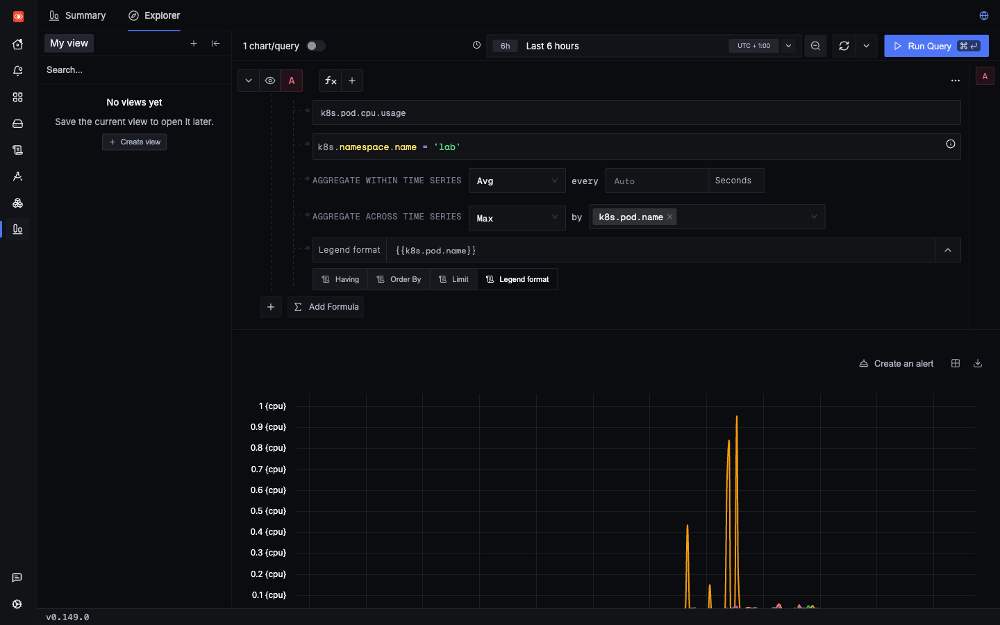
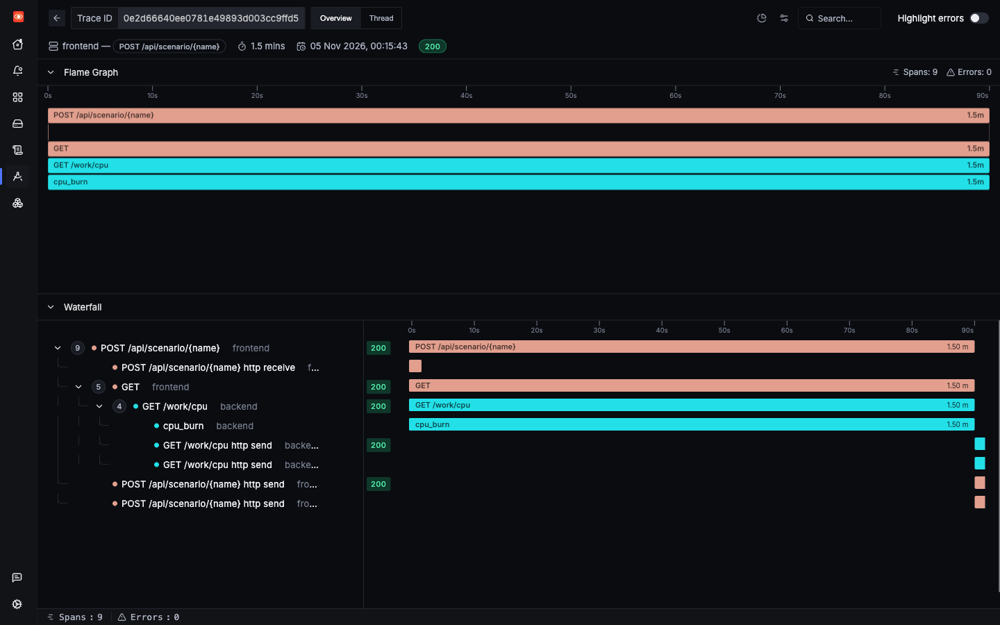
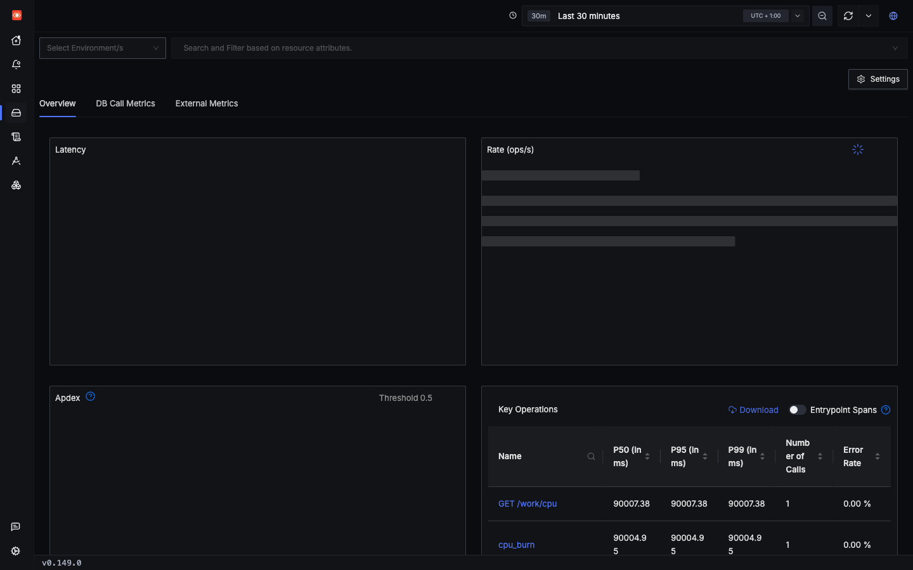

Incident 6 of 6
CPU saturation
One expensive request slows down unrelated requests. Traces alone will not explain this. You need infrastructure metrics, and that is where the k8s-infra chart comes in.
1Trigger it
The cpu_burn scenario spins the CPU in the backend. To see it on charts, burn for at least 60 seconds, and keep the load generator running so you can watch other requests suffer.
2Symptom
Requests that have nothing to do with the burn get slower. During a real 90-second burn, a list request was sent every second from outside the cluster, and the load generator kept running at 5 requests/s:
list, as measured by the client | Samples | P50 | P95 | Max |
|---|---|---|---|---|
| Before the burn | 30 | 21 ms | 65 ms | 100 ms |
| During the burn | 60 | 118 ms | 172 ms | 237 ms |
| After the burn | 15 | 24 ms | 95 ms | 95 ms |
The spans show the same effect from inside the backend:
| Backend route | P50 before | P50 during | P50 after |
|---|---|---|---|
GET /orders | 11.4 ms | 96.3 ms | 8.8 ms |
POST /orders | 32.8 ms | 123 ms | 29.8 ms |
You can feel this yourself. Start a burn above, then fire list here a few times while it runs, and again after it ends. Compare the times.
That is an 8-fold slowdown on a route that did nothing wrong. A trace of one of these requests looks normal, only slower. It has no hint of the real cause.
3Where to look
- A metric first:
k8s.pod.cpu.usagefor the pods in namespacelab. - Then find what was running at that moment, with a search for long spans in that service.
- Infra Monitoring in SigNoz has Hosts and Kubernetes tabs. See below for what was confirmed.
You must match by time and name. Spans have no k8s.pod.name in this lab (gap 3), so you cannot jump from a slow trace to its pod. With one replica you can work it out. With several you could not.
4Search
Metrics use a builder rather than a search expression. These are the settings:

Then find the culprit. cpu_burn exists as a span only because the code creates it by hand:
5Evidence
The pod goes from about 0.04 cores to almost a full core, and returns afterwards. Nothing else in the lab moved: Postgres and the frontend stayed under 0.05 cores.
The trace of the burn itself is simple. Its long cpu_burn span ties the spike to a specific request:


GET /work/cpu tops the list at about 90,007 ms. The charts were still loading when this was taken.Two things to watch for in the data
- Why two burns? The first was a mistake that became a useful example. The test client gave up after 40 seconds, and the backend still burned for the full 90. It is the same wasted work you saw in the timeout incident.
- Short spikes hide. An earlier 10-second burn showed only 0.15 cores with a 60-second step, because averaging mixes the spike with idle time. Pod CPU is also sampled every 30 seconds, so a very short burst can disappear entirely.
Infra Monitoring
The Hosts tab rendered and lists the lab's one node, with real CPU, memory and disk figures. It was captured after the burns, so it does not show this incident, and it is per node rather than per pod.

Screenshot not captured. The Kubernetes tab opened and listed Containers, Pods, Nodes and more, but its data never finished loading, so its contents are not verified. The browser timed out on this page while the host was overloaded. Open it yourself: http://signoz.localhost:8080/infrastructure-monitoring/kubernetes
6Root cause
app/backend.py lines 161–170161@app.get("/work/cpu")
162def cpu(seconds: float = 10.0) -> dict:
163 with tracer.start_as_current_span("cpu_burn") as span:
164 span.set_attribute("burn.seconds", seconds)
165 end = time.monotonic() + seconds
166 n = 0
167 while time.monotonic() < end:
168 n += sum(i * i for i in range(1000))
169 log.warning("burned CPU for %.1fs", seconds)
170 return {"burned_s": seconds}A CPU-bound Python loop runs inside a request handler, in a service with one process. The pod peaked at 0.993 cores, which is what a single busy Python process can use. k8s/app.yaml sets a CPU request of 50m but no limit, so this was not throttling:
k8s/app.yaml line 8665 resources: { requests: { cpu: 50m, memory: 96Mi } }Why are other requests slowed? The most likely reason is that Python's global interpreter lock lets only one thread run Python code at a time, so handlers wait for their turn. That fits the numbers, but it was not measured directly.
7Resolution
Keep heavy work away from the process that serves requests. Move it to a background job or a worker pool. For a quick improvement, run more than one process, so that one burn cannot hold up every request:
image: telemetry-lab:dev
imagePullPolicy: IfNotPresent
- command: ["uvicorn", "backend:app", "--host", "0.0.0.0", "--port", "8000"]+ command: ["uvicorn", "backend:app", "--host", "0.0.0.0", "--port", "8000", "--workers", "2"]This one needs care: each worker runs its own SDK. And it only helps while a free worker exists.
Once it is fixed, you want to hear about it before users do. A CPU alert on k8s.pod.cpu.usage would catch this. A fresh install has no alerts, so you need to write that rule yourself (gap 5).
Check yourself: A 10-second burn shows only 0.15 cores on a 60-second step. Why?
Check yourself: How do you get from a slow trace to the pod that served it in this lab?